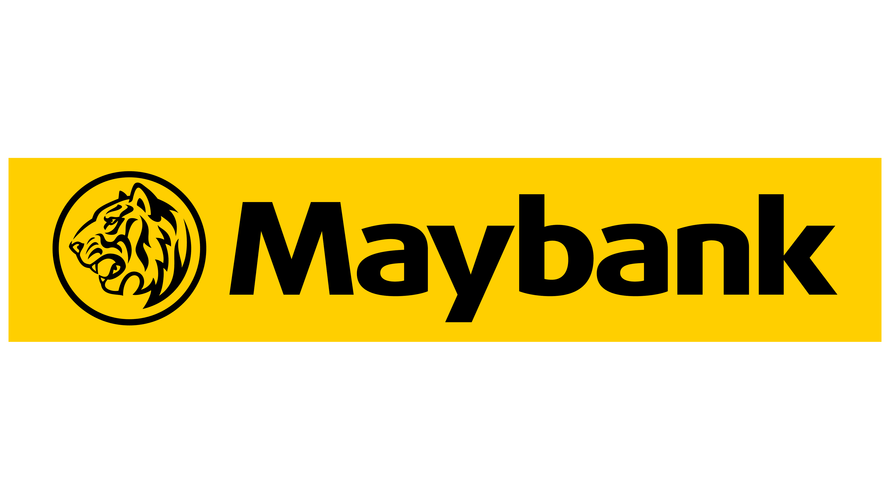
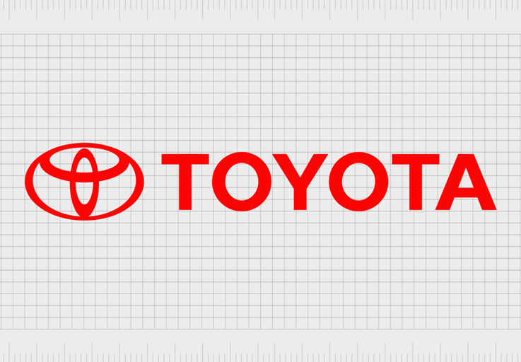

Architecting next-generation AI systems at the intersection of deep learning, robotics, and production-scale deployment. 6+ years turning research into reality.
I'm an AI Engineer and CTO with 6+ years building production AI systems, currently leading R&D at Strike Robot. My focus is embodied intelligence — making robots that reason, plan, and physically act in real-world factory environments.
My current research and engineering centers on Vision-Language-Action (VLA) models, World Models for robot planning, and multimodal LLMs/VLMs for humanoid robots, robotic arms, and legged systems.
Education
🎓 M.Eng · Mechatronics Engineering
🎓 B.Eng · Mechatronics Engineering
Developed enterprise-grade FaceID system for cloud and mobile. Achieved FIDO certification. Deployed for major banking and fintech clients.
Lightweight Kanji OCR model deployed on iOS and Android with aggressive quantization achieving 99.37% accuracy and ~10ms inference time.
End-to-end system that converts wrist-camera + ego-view human demonstration videos into robot control policies for the Unitree G1 humanoid. Includes automated data labeling, trajectory extraction, and BC+DAgger policy training.
Planning and engineering an Agentic AI system for the G1 Unitree humanoid robot. Includes human-to-robot action conversion from video and full factory integration.
AI system for extracting structured data from insurance documents, invoices, and forms. Customized LayoutLMv3 served via Triton inference server.
AI-powered visual search system for mechanical drawings using image embeddings and the Hungarian algorithm for matching. Team of 5.
As CTO, I make long-term bets on the right technology directions for the next 5 years of robotics and AI.
End-to-end intelligence for physical robots — from perception to action. Building systems where humanoids and robot arms reason about the physical world and execute tasks autonomously in unstructured factory environments.
Training foundation models that close the loop between language instructions, visual observation, and motor actions. Moving robots from pre-programmed routines to general-purpose instruction-following agents.
Building latent world models that let robots predict consequences before acting — enabling safer planning without relying purely on environmental feedback. Key for legged locomotion on unstructured terrain.
Leveraging large vision-language models as the reasoning backbone for robots — enabling semantic scene understanding, natural-language task decomposition, and open-vocabulary object interaction on edge hardware in real time.
6+ years shipping AI to real enterprise clients — banking (Maybank, ShinHan), manufacturing, and national infrastructure. Deep expertise in model optimization, edge deployment, and scaling AI systems that handle millions of daily inferences.
Building high-performance research engineering teams from scratch. Defining technical culture, research roadmap, and product strategy that translate cutting-edge AI papers into deployed real-world systems — not demos.
Journal of Science and Technology — Vietnamese National Council of Professorship (Peer-reviewed National Academic Journal)
Proposes a lightweight VLA architecture trained on human-demonstration data that achieves real-time generalization across 40+ manipulation tasks on humanoid platforms.
Introduces a recurrent world model that predicts future proprioceptive and visual states for legged robots, enabling zero-shot transfer from simulation to real hardware.
Presents a distilled VLM backbone optimized for edge deployment on robot arms, enabling natural-language task specification with sub-100ms inference on embedded hardware.
Weekly updates on what I'm building, researching, and breaking.
Working on a data pipeline to extract clean action-observation pairs from wrist-camera + ego-view recordings of human demonstrations. Training an initial BC policy on Unitree G1 arm tasks: pick, place, and handover.
Experimenting with RSSM-style recurrent world models to predict future terrain elevation maps for the legged robot. Early runs in Isaac Sim show 30% improvement in stair-climbing stability over baseline RL policy.
Integrating a quantized Qwen2.5-3B model as a high-level task planner for the robot arm. The LLM decomposes natural language instructions into primitive motion sequences executed by the low-level controller.
Deployed a fine-tuned InternVL2-2B on the humanoid's onboard GPU for real-time semantic scene understanding. The model correctly identifies objects, obstacles, and affordances at 12 FPS in factory-floor conditions.
Organizations I have collaborated with on cutting-edge AI and Robotics solutions.

Deployment of FIDO-certified FaceID systems
Enterprise OCR & Document AI solutions

Joint research on Embodied AI & Legged Locomotion
Agentic AI & Humanoid Robotics
Open to strategic advisory roles, research collaborations, and technology leadership opportunities.